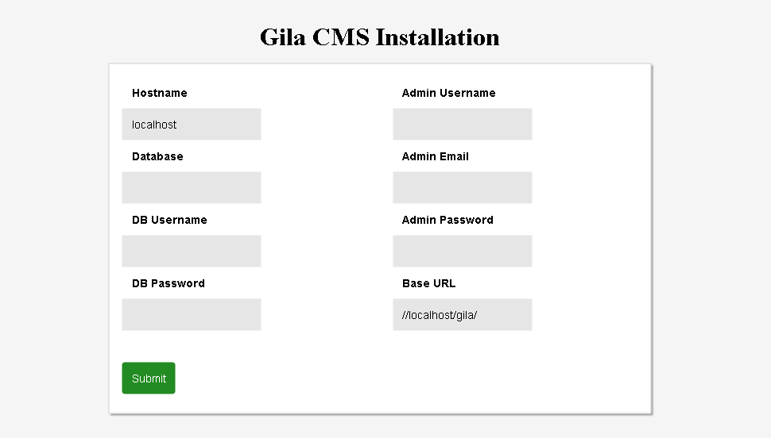
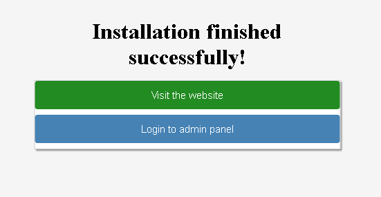

Installation¶
Preparation¶
Before beginning with installation make sure that your web host or local server meets these requirements:
- Apache 2/ Nginx server
- MySQL / MariaDB server
- PHP 7.0+ with the following extensions mysqli, zip, mysqlnd, json, gd and mod_rewrite enabled
If you want to install gila cms in your local machine and not sure how to prepare your server don’t hesitate to ask for help on Slack
First unzip gila in a public html folder e.g /var/www/html/gila and make sure that the folder is writable from the application.
On nginx server you will need to configure the redirects in /etc/nginx/sites-enabled/default (issue #1)
location / {
index index.php index.html index.htm;
rewrite gila/(?!install)(?!src)(?!themes)(?!lib)(?!assets)(?!tmp)(?!robots.txt)(.*)$ /gila/index.php?url=$1 last;
}
On apache 2 server you may need to edit default VirtualHost file in order let .htaccess work. On ubuntu/debian you run
sudo nano /etc/apache2/sites-available/000-default.conf
And add these lines after DocumentRoot /var/www/html
<Directory "/var/www/html">
AllowOverride All
</Directory>
If you need to activate mod_rewrite for apache
sudo a2enmod rewrite
Don’t forget to restart your server if you made any changes.
In order to proceed with the installation, you will need your database settings. If you do not know your database settings, please contact your host and ask for them. You will not be able to continue without them. More precisely you need the database hostname, the database name, the database username and password.
Installer¶
We access in installation page with the browser e.g http://localhost/gila/install
Install
In the installation page we must fill all the fields
- Hostname: the hostname of the database, usually it is localhost
- Database: name of the database
- DB Username, DB Password: the username and the password in order to connect to the mysql
- Admin Username, Admin Email, Admin Password: a user will be created for the website as administrator with these data
- Base Url: the web address of the website e.g. https://mywebsite.com/
After filling the data and submit them, we wait a few seconds untill the installation is finished.

When installation is finished we can enter on the admin panel using the admin email and password that we wrote before.

We can always access in the login page from these links mysite.com/ /login it redirects to the front page of the website mysite.com/ /admin it redirects to the administration
We enter in the administration dashboard.
 Dashboard
Dashboard
On the administration menu we see two submenus
- Content to add or edit content like pages, posts or files
- Administration to edit users or change the settings of the website.